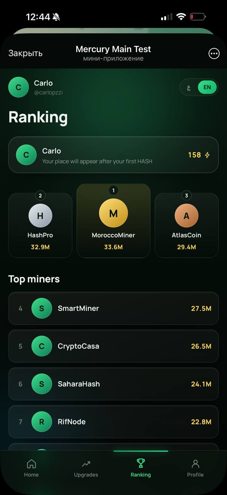

دخل للبوت
حل Atlas Click مباشرة فـ Telegram بلا تحميل.
جمع النقاط، كمّل المهام وخذ المكافآت ديالك بسهولة من Telegram.
كلشي واضح وسريع من داخل Telegram.
حل Atlas Click مباشرة فـ Telegram بلا تحميل.
كليكي واجمع النقاط من الواجهة الرئيسية.
خلي البوت يكمل الخدمة أوتوماتيكياً.
شوف الرصيد والجوائز ديالك من المحفظة.
تصفّح الواجهات الحقيقية ديال Atlas Click.

طوّر قوة الكليك وكمّل المهام.

شوف الرصيد، الإحصائيات وخيار السحب.

تابع الترتيب ديالك وسط المستخدمين.
واجهة واضحة، كتبدأ فثواني بلا خطوات معقدة.
فعّل الوضع الأوتوماتيكي وتابع التقدم ديالك.
ما محتاج لا تطبيق جديد لا تسجيل طويل.
“الواجهة واضحة وبديت نجمع النقاط دغيا.”
“عجبني Auto Click، كلشي كيبان قدّامي.”
“ما حملت والو، دخلت من Telegram وبديت.”
لا، Atlas Click كيخدم مباشرة من داخل Telegram.
ضغط على الزر، دخل للبوت ومن بعد تبع الخطوات فالواجهة.
خاصية كتسهّل عليك التفاعل مع البوت وكتبيّن التقدم ديالك.
تلقاهم فـ Balance وRewards وWallet داخل البوت.